Ce petit poisson est lui aussi un modèle prisé, plutôt facile et rapide à réaliser, surtout si vous maîtrisez déjà les techniques de base de la sculpture sur ballon.
Si ce n'est pas votre cas, vous devriez tout d'abord consulter les tutoriels suivants :
1- il vous faudra un ballon à sculpter "260" de couleur orange (ou tout autre couleur de votre choix) et un petit ballon normal (rond) de couleur blanche pour les yeux2- Gonfler le "260" orange, en laissant l'équivalent de la largeur d'à peu près cinq (ou même six) doigts, non-gonflé.3- Former une grande bulle "saucisse" aussitôt après le nœud (environ trois doigts en largeur).4 - Former ensuite une seconde bulle "saucisse", plus petite que la première (environ deux doigts en largeur).5 - Puis, former une troisième bulle "saucisse", de la même taille que la seconde (environ deux doigts en largeur).6 - Enfin, former une quatrième bulle "saucisse", de la même taille que la première (environ trois doigts en largeur).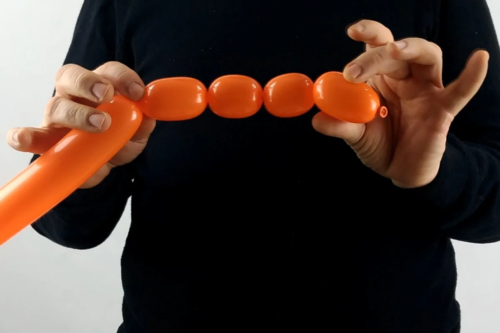7 - Vous devriez maintenant avoir cette série de bulles "saucisse": une grande, une petite, encore une petite, puis une grande tout comme la première.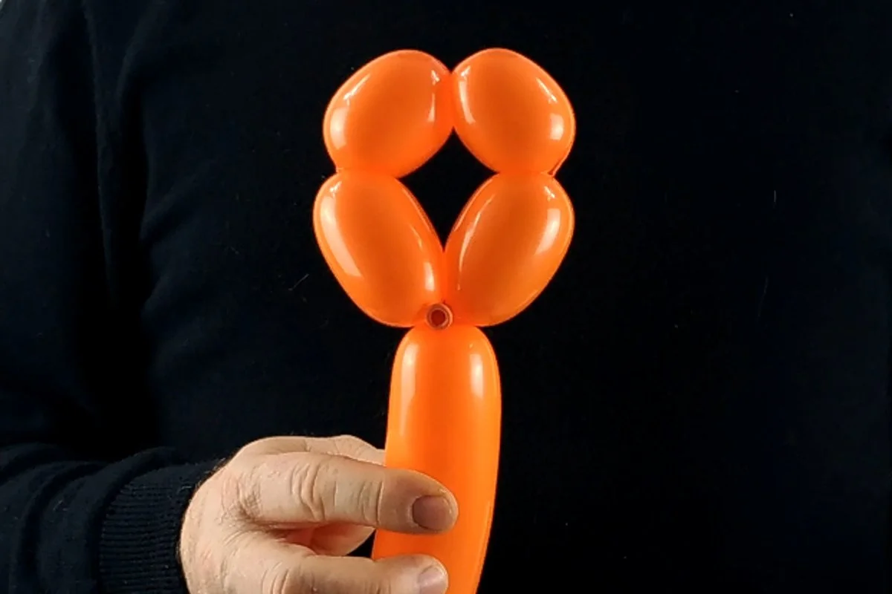8 - Pour attacher la série de bulles ensemble, tirer sur le nœud du ballon, faire plusieurs fois le tour du pli, puis passer le noeud à travers la boucle formée.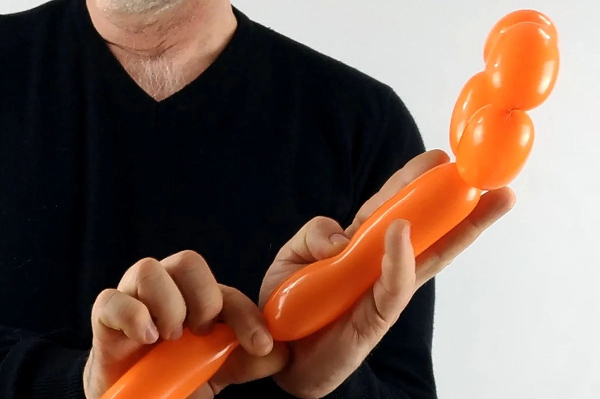9 - Une fois le tout stabilisé, former une longue bulle de la largeur d'une main.10 - La tenir en place, tout en la faisant suivre d'une bulle parfaitement ronde.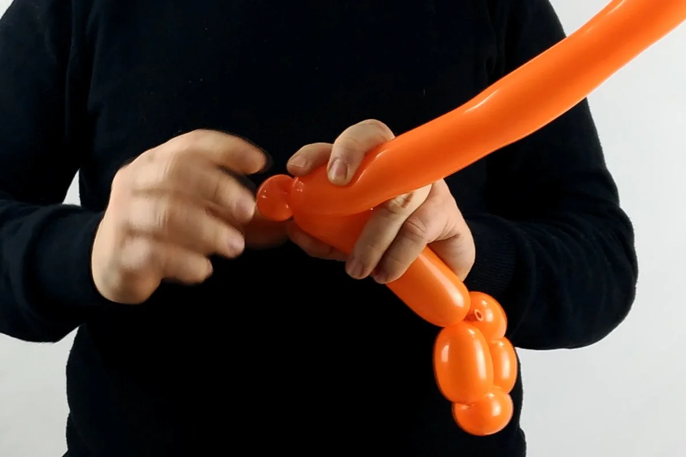11 - Transformer cette bulle ronde en "pinch-twist" (bulle-oreille).12 - Puis former une nouvelle bulle ronde, de même taille que la première,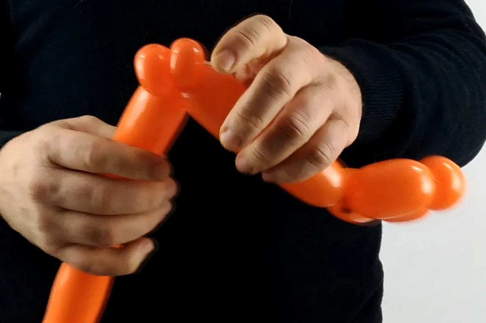13 - que vous transformerez également en "pinch-twist"14 - Puis former une nouvelle bulle allongée, de longueur égale à celle entre les deux "pinch-twists" et la boucle. 15 - Tourner ces deux bulles allongées autour de leur base pour les fixer ensemble.16 - Puis former une troisième bulle, de même longueur que les deux bulles allongées que nous venons d'attacher ensemble.17 - L'attacher aux deux premières en tournant la longueur de ballon restante autour de leur base (il s'agit également de la base des deux "pinch-twists").18 - S'il reste un peu trop de ballon,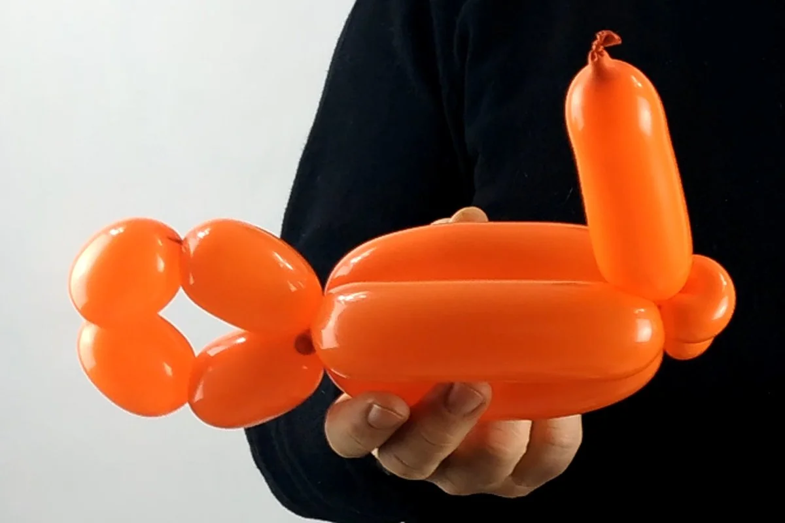19 - faire une petite incision avec des ciseaux (ou même une aiguille) au bout du ballon pour laisser s'échapper un peu d'air avant d'y faire un noeud.20 - On veut diviser le ballon restant en deux bulles de longueur inégale.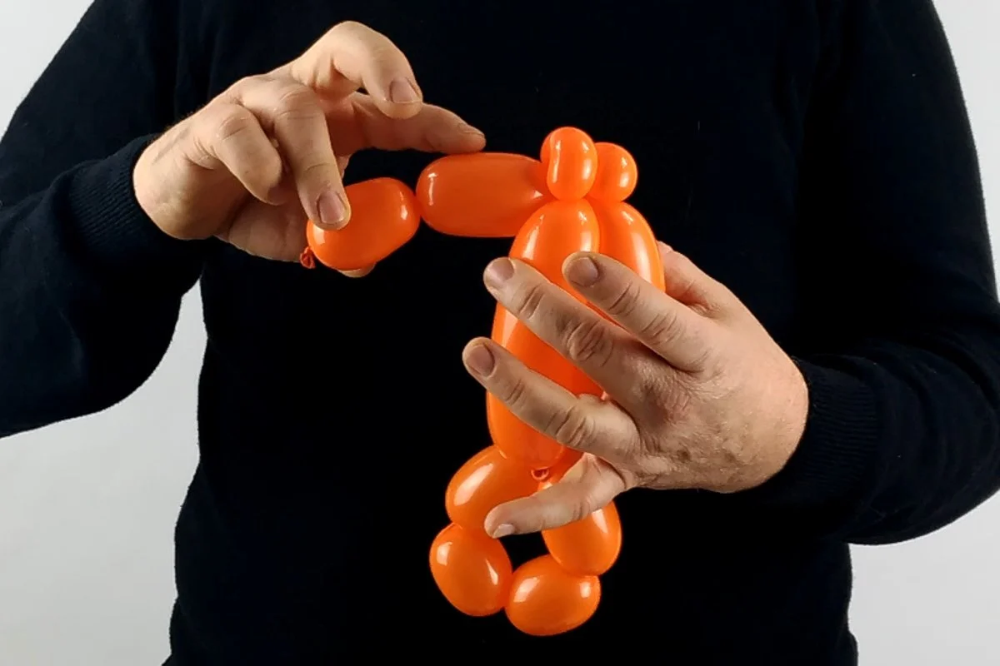21 - La première devrait être un peu plus longue (mais bien plus petite que les 3 bulles allongées qui viennent d'être attachées ensemble)22 - Et la dernière devrait être plus petite que la précédente.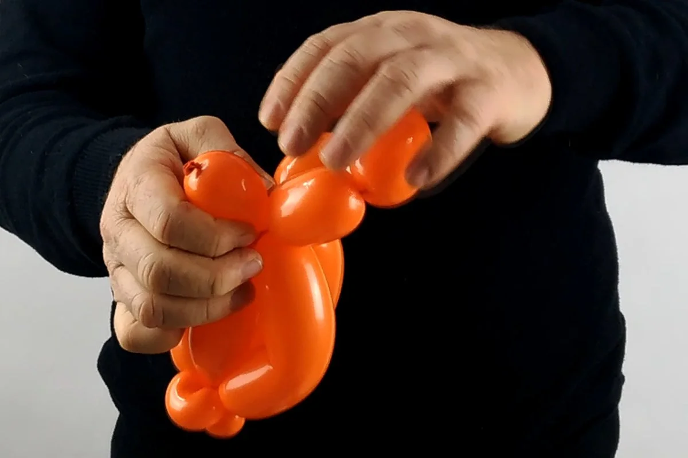23 - Prendre la base de cette petite bulle et la tirer pour la faire passer entre les trois longues bulles et la boucle. La tension fera légèrement s'incurver les trois bulles plus longues.24 - Quand vous aurez fait cela, caler la dernière petite bulle au milieu de l'ensemble formé par les quatre autres bulles: les trois bulles plus longues, qui sont incurvées, et la bulle droite, un peu plus courte (qui formera la base du poisson).25 - Prendre alors la toute première série de bulles réalisées, et appuyez le pli des deux petites bulles, contre le pli des deux bulles plus longues.26 - Ceci devrait vous permettre de faire pivoter plus facilement chaque petite bulle, de pair avec une grande bulle, pour former la queue.27 - Gonfler alors le petit ballon rond blanc qui devra être un peu moins volumineux que la queue que nous venons de former.28 - Diviser le ballon rond en deux bulles de taille égale. C'est un peu difficile au début, bien que ce soit sensiblement la même méthode que pour faire une bulle normale avec un ballon à sculpter (à ceci près que le ballon rond est plus trapu, donc plus difficile à manipuler).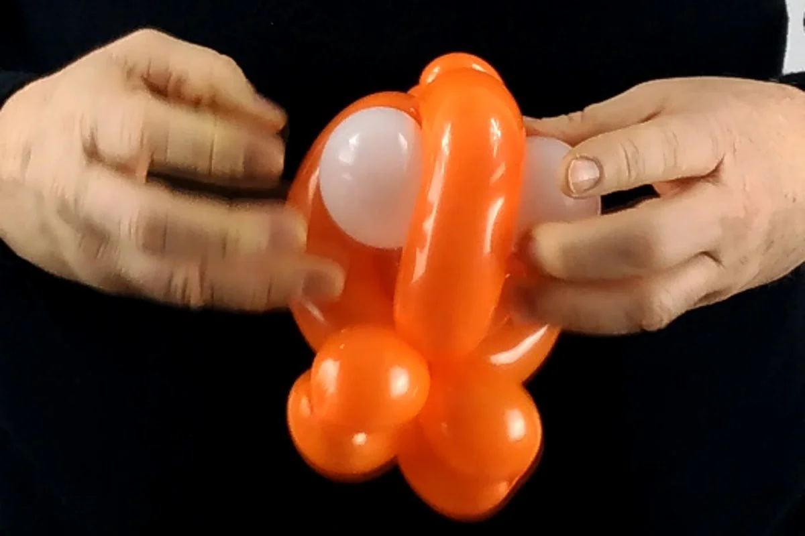29 - Reprendre le ballon orange (le corps du poisson) et loger l'une des bulles blanches sous la bulle orange incurvée du dessus (qui se trouve à l'opposé de la bulle droite, plus courte), pour la rapprocher au maximum des deux pinch-twists.30 - Puis, retrouver la toute dernière petite bulle réalisée avec le reste de ballon orange et en loger l'embout entre les deux bulles blanches, ce qui va les maintenir en place et remplir la cavité.31 - Prendre un feutre noir et dessiner des yeux sur les bulles blanches.32 - Voilà, le ballon est terminé! Vous pouvez vous en tenir là si vous voulez.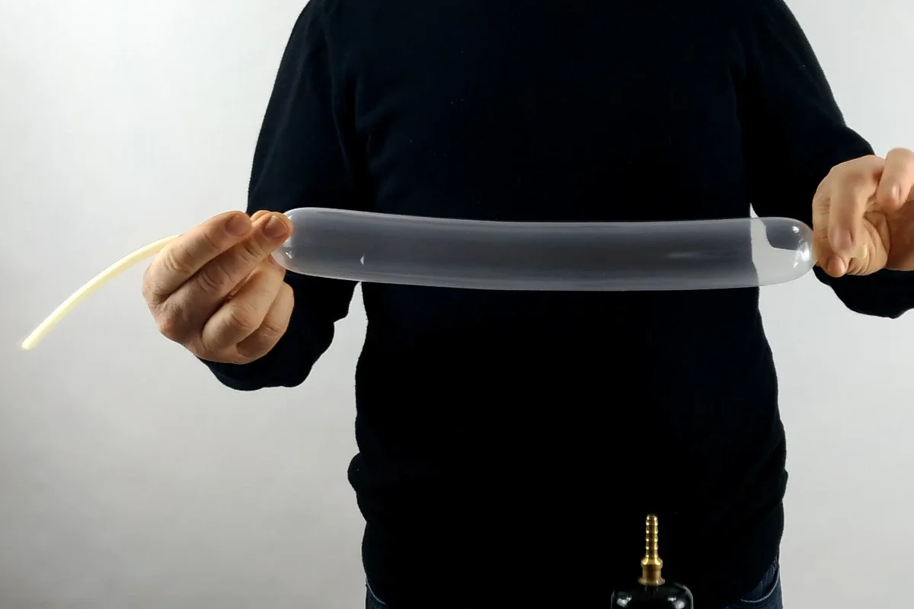33 - En revanche, si vous disposez du temps et du matériel nécessaire, vous pouvez ajouter un dernier détail en gonflant, seulement à moitié, un ballon à sculpter "260" transparent.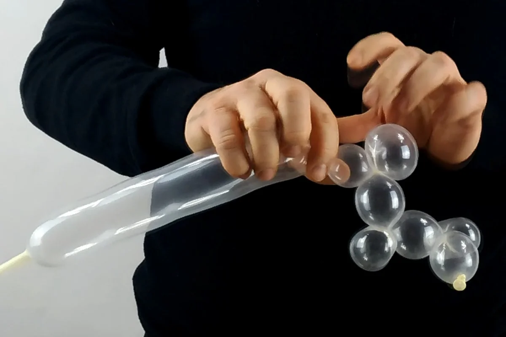34 - Avec celui-ci, faire une série de bulles, alternant les bulles rondes avec les pinch-twists.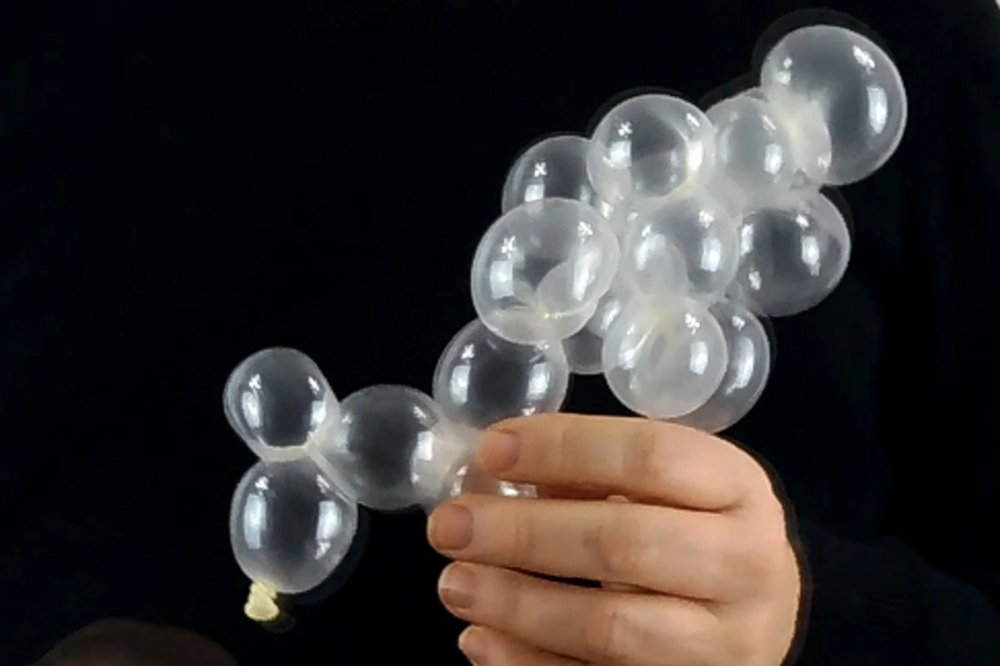35 - La dernière bulle de la série devra être fixée contre une autre bulle ou pinch-twist à la moitié de cette série, pour former un petit cluster.36 - Vous pouvez alors l'attacher au poisson comme vous voudrez. Vous pourriez choisir d'accrocher le cluster directement à la bouche, tandis que je le préfère sur le côté pour donner une impression de mouvement.Franchement mignons, non ? Et à bientôt ! Pour une nouvelle leçon... avec Môssier Ballon !